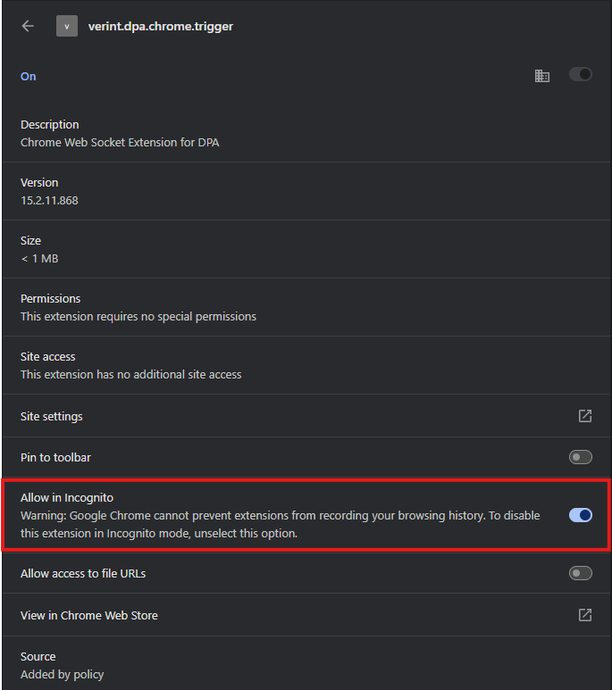

Enable Verint DPA Extension in Incognito Mode
NOTE: The Verint DPA Chrome Extension is required for every user so that we can take full advantage of application features and data analytics.
To do so, please follow these steps:
-
Open Chrome Extension Settings:
In your Chrome browser, go to the following address:
chrome://extensions/?id=hlnipadenlamgabofnnplfkdghpfnjeh
-
Locate the Verint DPA Extension:
Scroll down or use the search bar to find Verint.DPA.Chrome.Trigger.
-
Click "Details":
Click the “Details” button under the Verint extension.
-
Enable “Allow in Incognito”:
On the details page, scroll down and find the toggle switch labeled “Allow in Incognito”. Click the switch to turn it on.

-
Close and Reopen Incognito Window:
Close any existing Incognito windows and open a new one. The Verint extension should now be active in Incognito mode.
You're all set!